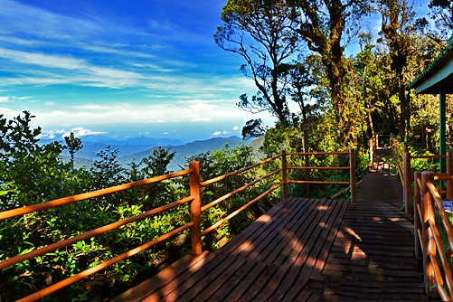
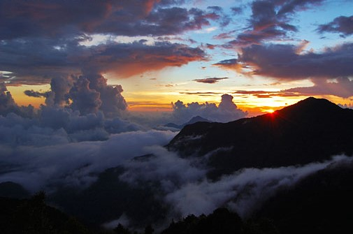
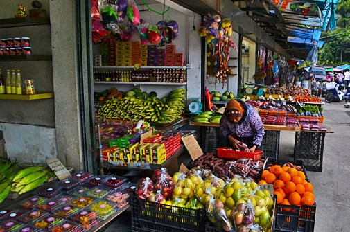
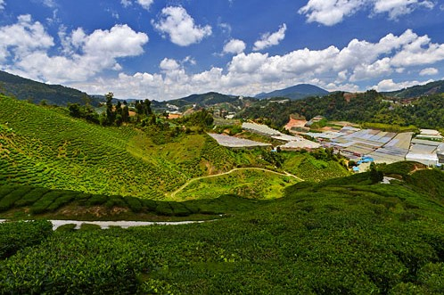
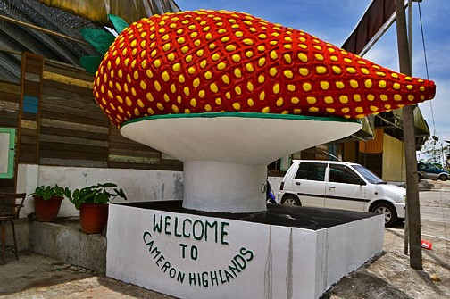

Nearest Attraction
-

Gunung Brinchang
Gunung Brinchang is the second highest mountain in Cameron Highlands (after Gunung Irau) at 2000 meters above sea level.
-

Kea Farm
Kea Farm is an agricultural district in Cameron Highlands, located 3km north of Brinchang town or 3km before Tringkap.
-

Cameron Valley
Cameron Valley Tea House and plantation is located along the main road in Kuala Terla, a village township nestled between Tringkap and Kampung Raja about 7km north of Kea Farm in Brinchang.
-

Kok Lim Strawberry farm
Kok Lim Strawberry Farm is a popular tourist attraction located along the main road shortly after leaving Brinchang town towards Kea Farm.